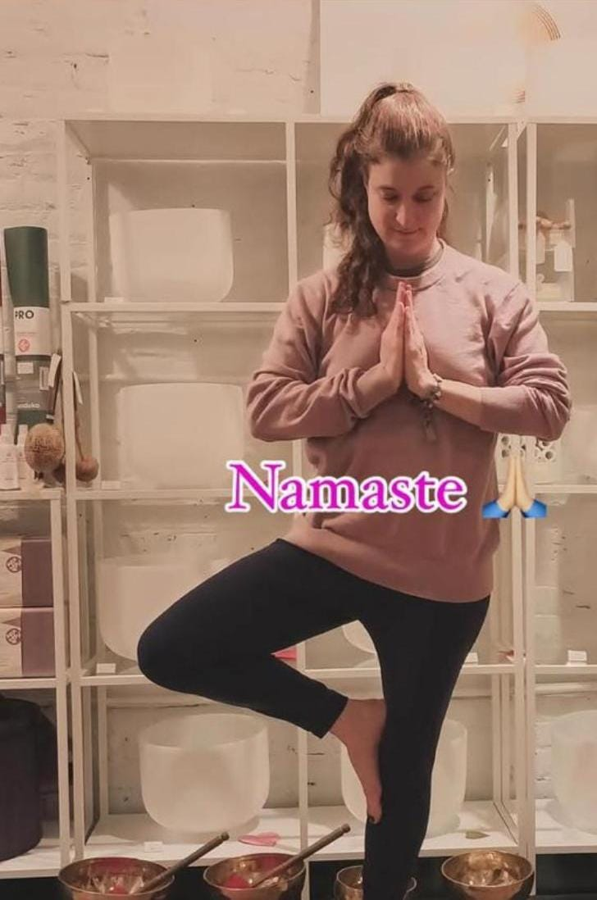
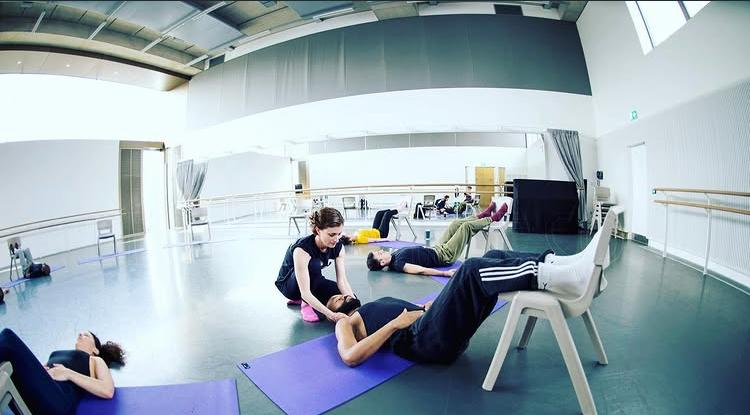
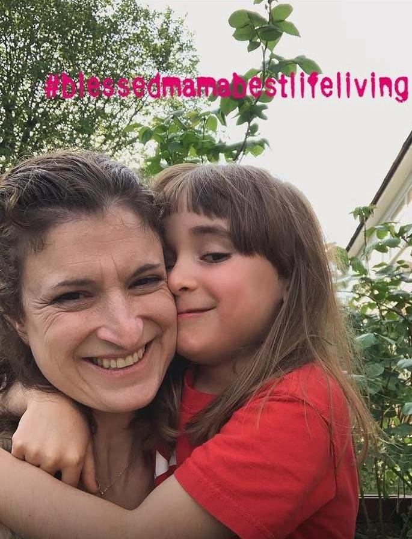
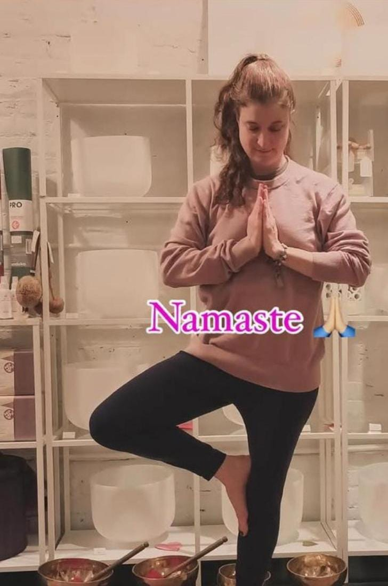
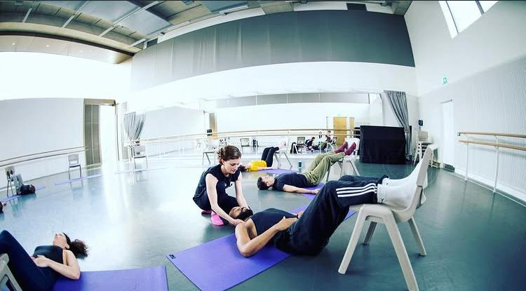
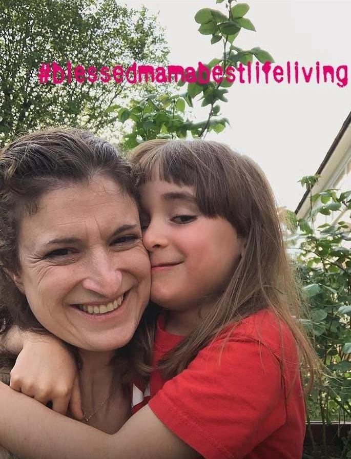
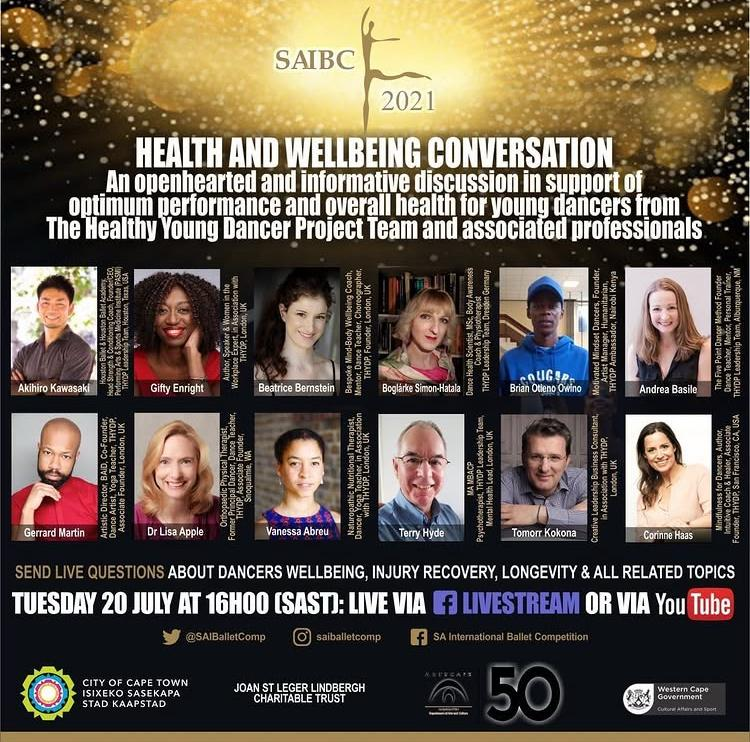
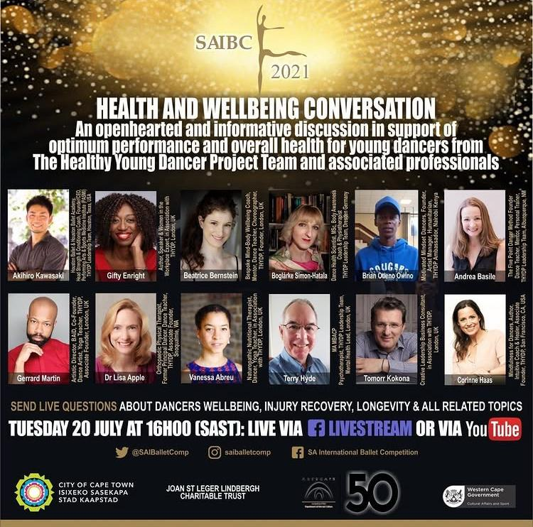

Start your journey to abundance
I am honored to assist my clients in resetting their limiting beliefs and creating lives filled with purpose, balance, and joy.
 





 


ABOUT Beatrice Bernstein
Certified Life Coach
I am a certified life coach with international recognition for helping individuals achieve their highest health goals across all aspects of life. For over two decades, it has been a great privilege to celebrate my clients' achievements as they engage in the transformative work that leads to their remarkable successes.
Certified Mindvalley Holobody Coach
I earned my Holobody Health Coach certification through Mindvalley. I'm grateful to have been trained by the brilliant visionaries: Mindvalley Founder and CEO, Vishen Lakhiani; Mindvalley Co-founder, Ajit Nawalkha; and Mindvalley's Head of Health & Fitness, Ronan Oliveira. I feel privileged that my clients affectionately refer to me as their “Abundance Reset Coach,” which has inspired me to embrace that title myself. I look forward to helping as many people as possible reach their ultimate goals and live life to the fullest. I want to support others in achieving their dreams of transformational success, heart-centered happiness, and complete inner tranquility.
Keynote Speaker & Founder
I am thrilled to share my journey as a transformational keynote speaker who had the incredible opportunity to address the International Association for Dance Medicine & Science's annual conference in beautiful Basel, Switzerland. I'm also the proud founder of the Healthy Young Dancer Project, a dynamic global community that already boasts 1,300 enthusiastic members! Recently, I joined the inspiring team at Angel Hearts Community Center as the Head of Community Outreach Projects, where I'm excited to contribute to meaningful initiatives. With over twenty years of diverse experience as a Wellbeing Coach, Professional Dancer and Actress, Special Needs Teacher, Mentor, and Mother, I draw upon a rich tapestry of skills. My own path to healing, particularly my journey to restore my lung function from a challenging 50% due to COVID-19, nerve damage, and neuromuscular dysfunction, has been transformative. I couldn’t have done it without my amazing holistic and medical healing team. I wholeheartedly believe in the power of love, self-belief, and the synergy of holistic nutrition, meditation, prayer, and functional movement. These elements can truly elevate the lives of those on a path to recovery. I am confident that you, too, have the strength to overcome any obstacles—be it physical, emotional, or mental! Let's embrace this journey together!
Community Empowerment
Committed to fostering holistic well-being, creativity, and community empowerment globally. Over the past decade, I have had the privilege of collaborating with numerous mission-driven, non-governmental organizations (NGOs) in Africa.
Impact & Philanthropy
I'm proud to be recognized for my impactful work in fundraising and resource mobilization. I'm passionate about turning innovative ideas into sustainable initiatives that foster meaningful change, especially for youth programs, creative arts, mental wellness, and community-led development projects globally. Moreover, I've joyfully dedicated countless hours to providing free mental health support and family yoga sessions, making a positive difference in the lives of people around the world.
Services
Explore the ways I help the world reset, grow, and thrive.

One-to-One Coaching
Beatrice Bernstein is an inspiring Abundance Reset Coach, transformational speaker, and mindset strategist who empowers individuals to reshape their inner world and cultivate lives filled with abundance. With her powerful Abundance Reset approach, she expertly helps clients break free from limiting beliefs, rebuild self-trust, and ignite abundance across all aspects of their lives—mindset, relationships, finances, and personal fulfillment.
Affordable Small Group Coaching
Beatrice creates powerful group spaces where individuals feel supported, aligned, and motivated to grow. Her leadership brings structure, clarity, and compassion into every session. Through spiritual alignment, body wellness, and mindset work, she helps people reconnect with confidence, resilience, and purpose.

Online Resources & Networking
Beatrice is a highly resourceful leader with access to global networks and digital opportunities. She connects NGOs, youth groups, and organizations with partnerships, programs, and systems that create meaningful impact and long-term growth.
Global Impact & Leadership
Heart-Centered Transformational Speaker
As a heart-centered, humanitarian-focused keynote speaker, Beatrice inspires audiences across cultures and continents with messages of positive abundance, resilience, inner strength, balance, and alignment. She compassionately challenges individuals and leaders to reset limiting beliefs, reconnect with purpose, and step into meaningful, purposeful action that creates personal and collective transformation.

Community Leadership & Global Outreach
As Head of Community Outreach Projects at Angel Hearts Community Center, Beatrice leads purpose-driven initiatives that nurture holistic well-being, creativity, and empowerment. Her leadership bridges grassroots action with strategic vision, supporting youth, families, and communities through programs rooted in compassion, dignity, and sustainable development.

NGO, Humanitarian & Social Impact Work
For over a decade, Beatrice has worked alongside numerous NGO and humanitarian projects across Africa — including Kenya, Uganda, and beyond — supporting initiatives focused on youth empowerment, creative arts, mental wellness, and community-led development. Her work has helped mobilize vital resources, providing nutrition assistance, clothing support, and essential medical supplies to thousands of people of all ages in communities in need.

Fundraising, Vision & Sustainable Change
Widely recognized for her strength in fundraising and resource mobilization, Beatrice has a rare ability to connect vision with action. She turns inspired ideas into sustainable initiatives that create real, measurable change. Her leadership has helped organizations build bridges between passion and impact, mobilizing long-term support for social good at both local and international levels.

Peace, Healing & Humanitarian Service
Deeply committed to promoting peace and global healing, Beatrice has donated hundreds of personal hours offering free mental health support sessions and family yoga programs internationally. Her humanitarian service is rooted in compassion and spiritual awareness, supporting emotional resilience, healing, and well-being for individuals, families, and communities worldwide.

Heart-Centered Leadership
Rooted in deep wisdom and spiritual insight, I bring a grounded, heart-centered approach to leadership and coaching. My spiritual awareness, combined with strategic thinking, supports purpose-driven projects, conscious organizations, and impact-focused collaborations.
I attract aligned partners, supporters, and opportunities that amplify social good. I guide individuals and leaders to reset limiting beliefs, unlock inner clarity, and create meaningful, sustainable, and successful lives.
START YOUR RESET JOURNEY! CLICK HEREContact
Let's connect! Reach me directly via email, phone, or social media.